Maknae is a small mobile robot that works alongside older adults who have trouble getting around. Outside, it carries their things and walks with them. At home, they can ask from where they’re sitting: “Maknae, bring me my pill case.” When they head out or send an SOS, their family gets a notification on their phones.
On June 3, 2026, I started with $749.12 I’d saved working as a teaching assistant at a tutoring academy. I built it all on my own: chassis, electronics, firmware, ROS 2, robot arm, app for older adults, caregiver dashboard, and 3D avatar. By November, the receipts added up to $1,121.43.
I’ve written down why I made it, what it does now, and where I got stuck over those six months and how I got past it. As you scroll through the build, the calendar turns with you, showing how much money I had left and what the robot looked like that day.
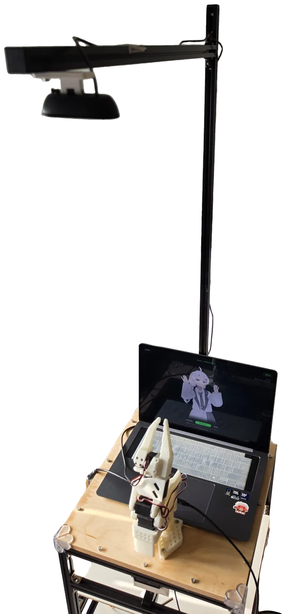
Grandma doesn’t call first
Grandma lived on her own, away from the rest of us. She wasn’t one to call first, so growing up I kept hearing, “You should call Grandma more often.” Then a few busy days go by, and somehow the call keeps getting pushed back. My dad did the same thing I did.
Then I saw Bodyfriend’s “Checking In” ad.1 A parent switches on their massage chair, their child gets a notification, and the child calls. An ordinary thing the parent already does becomes a reason to check in.
SCENE 01A notification comes in mid-run — “Your mother has started using her Bodyfriend chair.”
SCENE 02Mom“Oh, my eldest! What are you calling at this hour for?”Son“Hey, Mom. You’re in the massage chair, huh?”
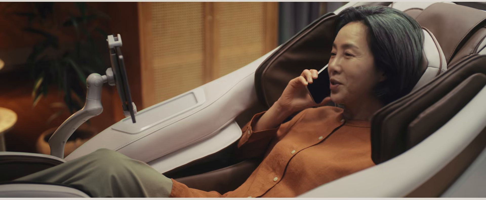
SCENE 03Mom“Oh, this is too funny…” — and just like that, they’re catching up.
Scenes from Bodyfriend’s “Checking In” ad, the mother’s story
What if checking in were a little signal that came from an older person’s ordinary day, instead of one more call you have to remember to make?
Grandma goes to the supermarket and makes trips out of town, too. What if the family got a ping when she left and when she got back? What if something could go along and carry her things, then bring her whatever was out of reach when she sat down at home? That’s where Maknae started.
It isn’t just our family
When I looked into it, I found three places where people could use help.
Share of fall patients treated in emergency departments in 2025 who fell at home. Even getting water or medication means getting up from the bed or sofa and making a short trip.
Missing-person reports involving people with dementia in 2025. People still need to shop and get to the doctor. If contact is lost during an outing, family members need a way to find out what happened.
Checking in should happen without anyone having to think of it. Outings need a safety net. And for those short trips around the house, sometimes you just need someone to get up for you.
“Couldn’t they just pull a shopping cart?”
That’s the first thing people ask when I bring this up. The trouble is that supporting your weight and carrying your things end up being the job of the same device. Pull a shopping cart with one hand and you lean to that side, with only one hand left to catch yourself if you fall. Load the basket on a rollator and its center of gravity shifts forward and up, making it easier to tip at a threshold or on a slope.
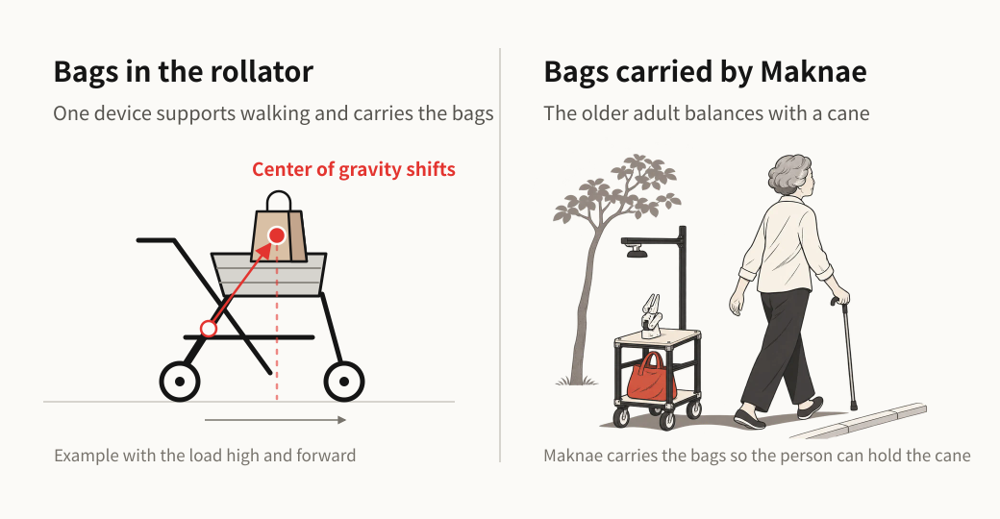
Loading a rollator shifts its center of gravity forward and up. Maknae carries the load separately and follows along.
Maknae splits the two jobs. The robot carries the bags and follows, so the person’s hands are free for their cane. At home, it saves them getting up for water, medicine, or glasses. Outside, it tells the family when they leave and when they get back.
The problem I decided to tackle
The options I found each came up short somewhere. Carrying a load with a manual mobility aid can raise the risk of a fall, and it does nothing for errands or check-ins. Commercial care robots either cost tens of thousands of dollars, putting them out of reach for most individuals, or amount to a speaker that can talk without lending a hand. Smart-home devices mean a pile of apps, tiny buttons, and bits of English in the menus. In the end, older adults stop using them on their own.
I wanted one affordable, friendly machine that could carry things on outings, run small errands at home, and keep family in the loop about both everyday comings and goings and emergencies.
That gave me five requirements.
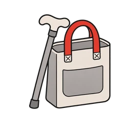
Outing companionCarries the bags and walks alongside you — ArUco following and a five-point spring-suspended cart
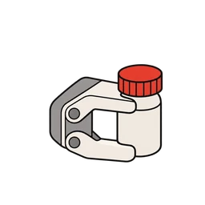
Indoor errandsSaves you getting up — SO-101 arm, a roughly $20 overhead webcam, and Gemini 4 with a control harness
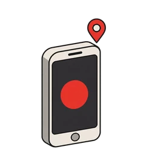
Check-ins & SOSEveryday updates without another call to remember — app with phone GPS, caregiver dashboard, and push notifications
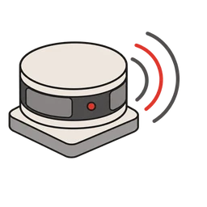
Safe autonomous driving100 Hz STM32 control, gyroscope EKF, 2D SLAM with the RPLIDAR C1, and obstacle stops
Friendly interfaceLarge tiles and text (20–28 sp and up), plus a 3D avatar you can talk to
What Maknae does
MAKNAE stands for Mobile Assistant for Kin’s Needs And Errands. In Korean, maknae is the youngest in the family. I wanted the robot to feel like a younger sibling or grandkid who’s around to run the little errands.
I mounted a six-axis SO-101 arm and a one-meter L-shaped camera mast on a 450 × 400 × 368 mm aluminum chassis. Two spring-loaded drive wheels and three casters sit on the floor. A Raspberry Pi 5 and STM32 handle driving, a laptop on top runs the arm, voice conversations, and avatar, and a cloud model recognizes objects. I first sketched out the home and outing scenarios on video, then tested the functions below on the real robot.
Asking for a pill case without getting up
Maknae hears a request for the pill case on the desk and lines itself up with the marker in front of it. It finds the pill case through the overhead camera, picks it up, and goes back to where it was asked. When it hears “hand it to me,” it opens the gripper.
Asking for a pill case without getting up
Let Maknae carry the shopping
When the older adult heads out, the family gets a notification. Maknae carries the bags and follows the marker on the bag. It stops if the marker drops out of sight. If it still can’t find it ten seconds later, it sends an SOS. Once the alert is cleared, the shared location is deleted.
Let Maknae carry the shopping
Watching the robot drive from the console
The Follow tab shows the distance and bearing to the marker as read by the camera, alongside both wheel speeds. The Map tab overlays the lidar scan and robot pose so I can see the path Nav2 planned. In the Arm tab I use the overhead feed to check where the gripper should go and test individual moves.
Watching the robot drive from the console
A 3D avatar that listens and talks back
Maknae answers on screen with a voice and a face. three-vrm moves the mouth with the amplitude of the audio and changes the expression. ElevenLabs Agents turns requests spoken in Korean into calls to the errand or guidance tools.
A 3D avatar that listens and talks back
The app for older adults and the caregiver dashboard
The older adult starts an outing with a large tile. A caregiver can see outing notifications and SOS alerts on the web. The app gets the location from the older adult’s phone and shares it only while an SOS is active. The caregiver dashboard is read-only.
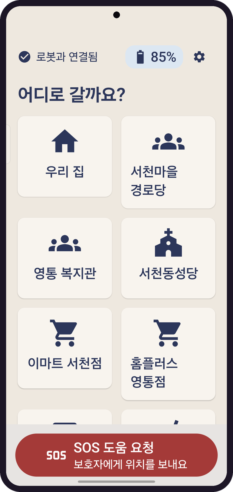
Outing and SOS tiles in the app for older adults
Active SOS in the caregiver dashboard
Demos on the real robot
These clips were filmed on the physical robot. In the first one, from the spoken request all the way to the handover, Maknae grasps the object on its own. A knee is an uneven surface with no height marker, and the clear tape wasn’t in the training data. Play the clip and the steps beside it light up as they happen.
Ask“Maknae, can you bring me the clear tape?” The voice conversation calls the errand tool. If the robot is already busy, it says so right away.
FindThe arm tucks away to clear the overhead camera’s view. Gemini 4 finds the tape and the hole in the middle. If a hand overlaps the tape, Maknae stops and asks the person to move it.
CalculateMaknae maps the image coordinates into the arm’s frame and checks that it can reach. It approaches at a height that clears other objects.
GraspIt lowers slowly, accounting for 5–9 mm of sag under the arm’s own weight, slips the fixed finger through the hole, and closes the gripper. If it comes up empty, it tries again 3 mm lower.
Hold and waitWith the tape lifted, Maknae checks every 200 ms that it hasn’t slipped. It keeps the gripper closed until it hears “hand it to me.”
Hand it overOn “hand it to me,” Maknae opens the gripper into the person’s hand, then folds the arm back into its resting pose.
Next is the whole trip, bringing soy milk from the top of the fridge to the bedside. I drove the physical robot remotely for this run. I’d tested driving up to a marker, picking up an unfamiliar object, and returning to the start autonomously on their own. Stringing the three together is still on the list. The next job is to handle a few centimeters of docking error gracefully with an arm that reaches 30 cm.
Drive to the fridge → pick up the soy milk carton → carry it to the bed → hand it over
At the booth, someone held up a marker and Maknae followed them as they walked. When it lost track, the SOS popped up on the older adult’s phone and the caregiver’s tablet at the same time. I blurred the visitors’ faces.
Maknae follows a marker across the exhibition floor alongside its live digital twin
The lost marker triggers an SOS on the older adult’s phone and the caregiver’s tablet
Six months at the workbench
I took it one function at a time, testing the important bits on the real thing and changing the design whenever I hit a wall. The bars below show what got in the way at each stage, what got me past it, and when.
JunJulAugSepOctNov
Cart proof of conceptThe wire mesh flexes and the drive wheels spin → 2020 aluminum extrusion and spring suspension
Frame & MCUOne 50 Hz ESP32 superloop → STM32, static FreeRTOS at 100 Hz, and micro-ROS
ManipulatorACT fails with new objects and lighting → Gemini 4 semantic pointing and a deterministic control harness
Electronics & hardwareSix points of contact, overcurrent, and bad breadboard connections → Five points of contact, replacement parts, and the KiCad Rev B perfboard
Sensor fusion & SLAMWheel rotation off by 12.5% and no obstacle detection → Gyroscope EKF and RPLIDAR C1
Care platformThe cost of separate GPS and the awkwardness of talking to thin air → Phone GPS app, caregiver PWA, and Maknae’s 3D avatar
My starting money was the $749.12 I’d put away over a semester as a teaching assistant at a physics tutoring academy. I didn’t feel bad spending it. I like making robots for its own sake, and I learn a lot by doing it.
I wanted to reuse the Raspberry Pi, battery, STM32, and arm on the next robot. First, I’d see whether I could get it to drive and follow using the wire cart I already had at home.
The first sketch, June 3. A two-wheel cart made from 2020 extrusion.
Two days into ordering parts, half my starting money was gone. I bought the computer (a Raspberry Pi 5), the power supply (a LiFePO₄ battery), and the drive hardware (encoder motors and a driver) all in one go.
Devicemart + AliExpress2026-06-04 ~ 06-05
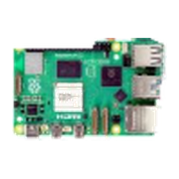
Raspberry Pi 5 8 GB with cooler and caseMain computer and ROS 2 host$234.85
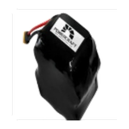
12.8 V, 9.9 Ah LiFePO₄ battery and charger20 A BMS and 4-cell 6 A charger$110.83
Two JGB37-520 Hall encoder motors12 V, 178 RPM drive motors$22.08
Cytron MDD3A, WAGO connectors, and DC jacksDual-channel 3 A motor driver and accessories$19.46
E-stop, LED switch, and 5 V 5 A buck converterPhysical emergency stop and Pi power$16.29
Total$403.52
15 items total, covering the computer, battery, and drive
I wasn’t aiming for a finished robot on the first try. I flipped over a 440 × 360 × 540 mm two-tier wire cart I had at home, drilled holes for the brackets, and bolted on the motors and drive wheels. I crimped ferrules onto the wires so the connections would hold. The proof of concept was to see whether driving, reading encoders, and following a person would actually work before I built a proper chassis.
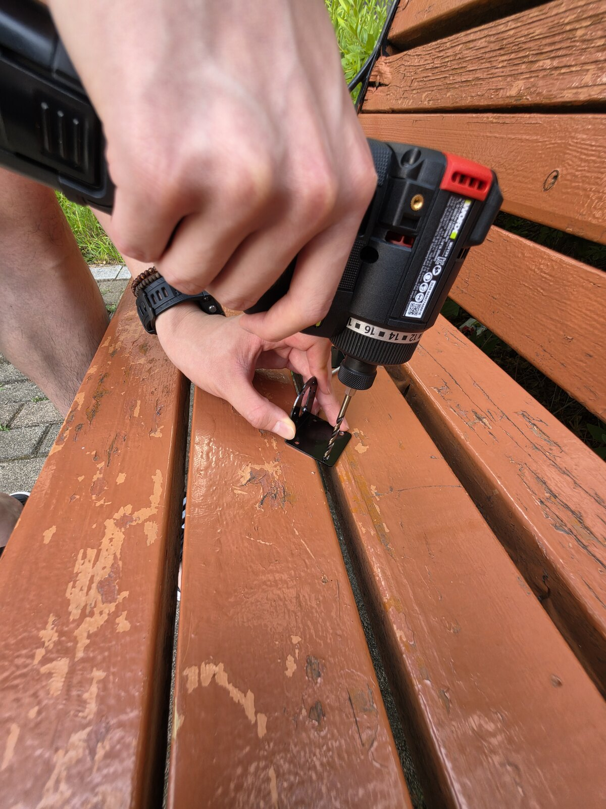
Enlarging the bracket bolt holes with a drill
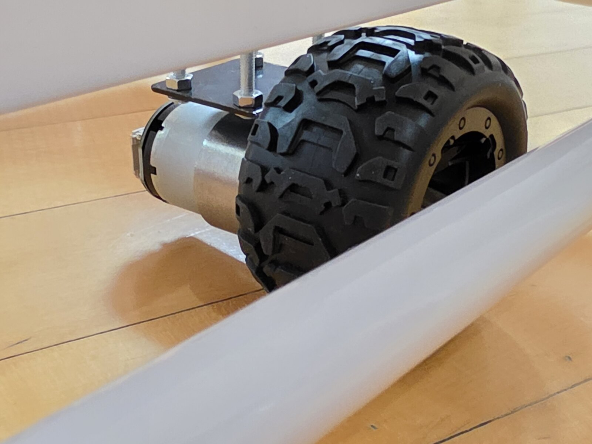
Mounting the L-brackets and motors to the wire base
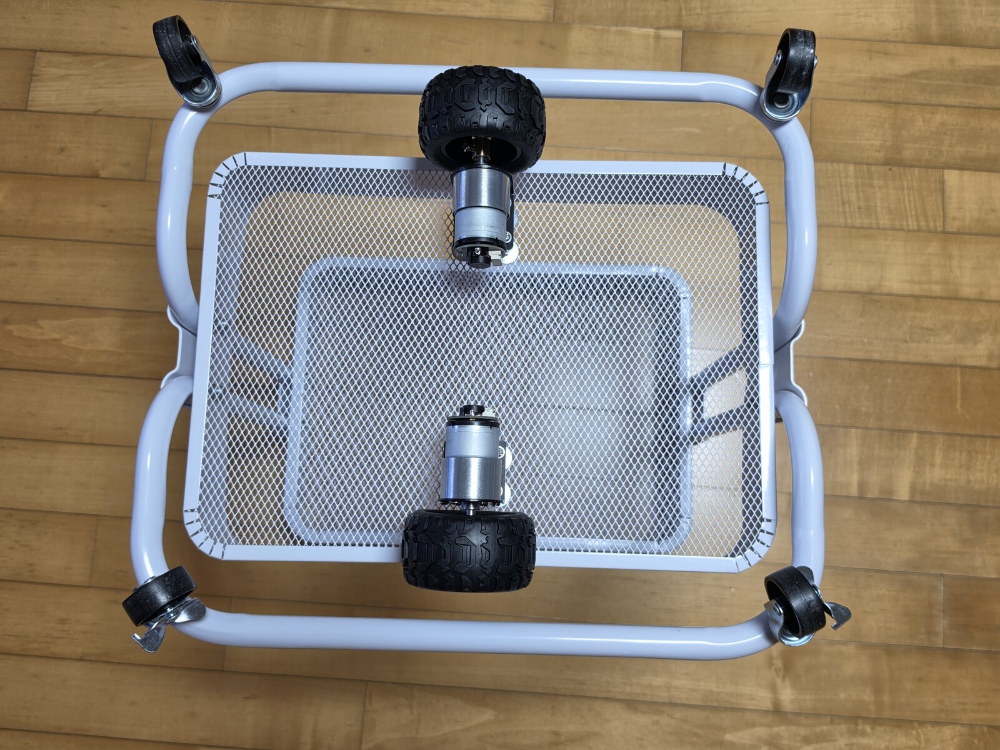
The cart upside down, with two drive wheels and four corner casters
I bought the SO-ARM101 Pro for $293.22, about 40% of my starting money. Then I had to power it. The servos want 12 V, there’s no wall socket on a rolling cart, and power banks either don’t offer a 12 V output or are stuck at 5 V. A USB-C PD trigger negotiated 20 V from the power bank. A buck converter brought it down to 12 V. The two parts cost $7.38.
AliExpress, Seeed Studio, and others2026-06-20
SO-ARM101 Pro (Assembled)Six-DOF manipulator kit$293.22
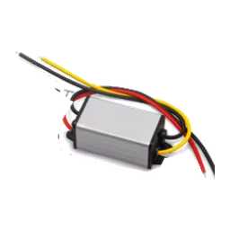
Waterproof 24 V to 12 V, 5 A buck converterC2D60K2412 · 60 W$4.59
ZY12PDN USB-C PD triggerNegotiates 20 V from the power bank$2.79
Total$300.60
Power banks either lack a 12 V PDO or put out a fixed 5 V.
The workaround was PD at 20 V into a 12 V buck converter ($7.38).
I put the left and right speed targets and the measured encoder speeds on the ESP32-S3 board’s little TFT. That let me see what was happening as it drove, without lugging around a monitor. I raised the PWM bit by bit to find where the wheels started to turn (50–56 on the two sides), compensated with feedforward, and checked that both encoders followed a target of 250. Then came the one-meter straight-line test.
Closed-loop driving with target speed (tgt) and measured encoder speed (cur) on screen
Both encoders showed the same ticks, yet the chassis veered left. The tape measure said it had gone 87.8 cm forward and slid 40 cm left. That’s 24.5°.
The culprit was the 1.2 mm wire mesh. The reaction to the drive torque bent the mesh up near the bolts, taking weight off the wheels and letting them spin. The finite-element bending analysis showed the same thing. I decided to rebuild with a frame of 2020 extrusion and add spring suspension.
Drive wheels spinning on the wire cart
Finite-element bending analysis showing the drive torque reaction bending the wire mesh up and lifting a wheel
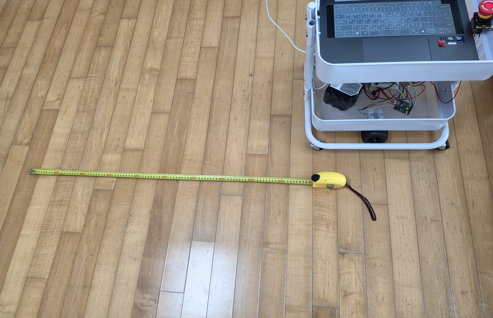
Straight-line test with a one-meter tape measure on the floor
Measured trajectory: 40 cm left over 87.8 cm forward
I temporarily mounted the C920 camera, emergency stop, and SO-101 arm on the cart. In Gazebo Harmonic I simulated lining up with several markers and then picking up an object. All 78 automated tests passed. I also caught a gotcha: the camera dropped from 30 Hz to 4 Hz unless I pinned down the Fast DDS network settings.
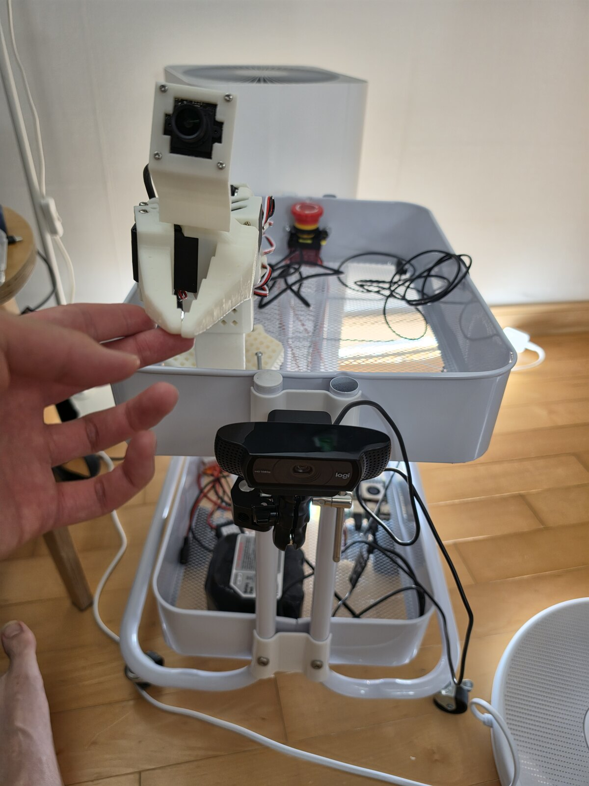
The C920, emergency stop, and SO-101 together on the cart for the first time
I took a series of checkerboard photos to get the C920’s intrinsics and distortion coefficients. You need those to read distance from the marker’s size. Using one camera at 720p and 30 fps, the cart estimated the 3D distance and angle to a paper ArUco marker and drove right after it. That proved the core person-following pipeline could work without an expensive depth camera.
The wire cart follows a paper ArUco marker
Calibrating C920 lens distortion with a checkerboard
The wire cart proved three things. A single camera and a paper marker were enough to follow someone. Closed-loop encoder speed control and the simulation pipeline both worked. And I could power the arm separately from a single power bank.
It also exposed two limits. Thin wire mesh bends. And the ESP32 controller, with screen, control, and communications crammed into one 50 Hz loop, had neither an input filter nor a watchdog. I couldn’t leave it that way on a robot meant to drive alongside older adults. At the end of July I started designing the real chassis.
Safety came first on the main controller. I used the NUCLEO-F446RE I’d bought on July 2 for $29.67 to build the real-time control and hardware safety layers from scratch. To be fair, micro-ROS and FreeRTOS both run on an ESP32. I wanted hardware encoder counters, advanced control timers, and a more precise ADC. And working out the clock tree myself in CubeMX was the kind of fun I hadn’t had with Arduino.
ESP32 PoC
STM32 on the main robot
Measured
Execution model
Control, TFT, and LEDs in one loop() (up to 27 ms between iterations)
Static FreeRTOS triggered directly by TIM6 at 100 Hz
Zero overruns in 21 minutes
Communications & encoders
USB CDC at 115.2k with ASCII (String) and weak internal pull-ups
USART1 921.6k DMA · TIM2/3 ×4 (IC1F=4)
RTT 2.54 ms · ≤1 tick
Hardware safety
Software-only millis() check at 500 ms
Independent watchdog (IWDG) and TIM1 MOE cutoff
Automatic reset in 300.2 ms
Control & sensors
10-bit PWM, ad hoc ×0.70 scale factor, and no IMU
18 kHz(4,667 step) PI+FF · SPI2 IMU · ADC
0.137% speed error
The control interrupt’s worst-case execution time was 46.7 µs, or 0.47% of the 10 ms period. Dynamic allocation at runtime: 0 bytes. Over DMA at 921.6 kbps, 32,072 messages went back and forth in 600 seconds without a loss. If control stalls, the watchdog cuts motor output in 300.2 ms.
I measured the motor bracket holes with calipers (3.86 mm), drew the spring suspension in CAD, then ordered wheels, hubs, and hinges. That order used up the last of the $749.12 I started with. Total spent: $792.12. Balance: −$43.00. I was in the red from here on out.
I downloaded MISUMI’s STEP files and assembled them in SolidWorks first. I checked for interference and weighed the frame in CAD (2,603.9 g by itself), then ordered what I’d drawn: 21 lengths of extrusion, 68 corner brackets, and 296 bolts and nuts.
MISUMI Korea · 17 items2026-08-03 ~ 08-11
21 lengths of black 2020/2040 extrusionCut to 360, 450, 410, 328, and 130 mm$36.07
68 corner brackets and four caster platesFasteners for the rigid three-tier frame$33.86
At first I thought one imitation-learning policy (ACT) could do all the indoor errands. I recorded 70 demonstrations myself with LeRobot 0.6.1, then submitted a Slurm job for 100,000 training steps on the university’s Seraph Aurora GPU cluster (RTX 3090). The trained policy could do things like “put the ball in the yellow bowl.”
The trained ACT policy does “put the ball in the yellow bowl”
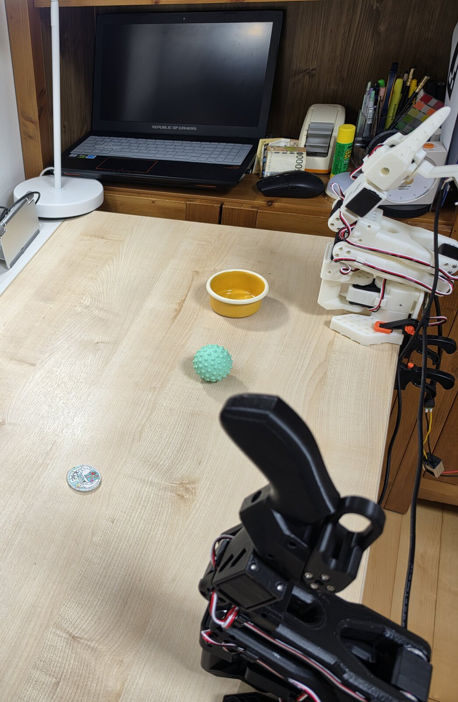
Recording demonstrations at 2:50 a.m.
Undergraduate allocations on the university’s Seraph Aurora GPU cluster
Uploading the dataset and submitting the Slurm job
Training log on Seraph aurora-g4 (RTX 3090, 24 GB)
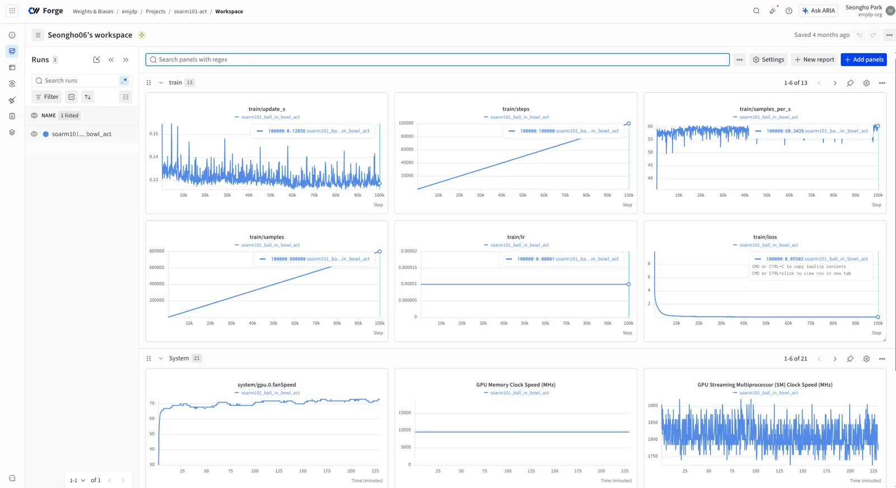
Weights & Biases learning curve for 100,000 ACT steps on Seraph (loss 0.055)
Then I’d move the camera a centimeter, or the sun or exposure would shift a little, and it fell apart. It couldn’t pick up a pill case, a water bottle, or glasses it hadn’t seen in the training data. Every home has different objects and different light. That made up my mind to change the design. I wrote about what replaced it on November 4.
I built the aluminum box frame with 68 corner brackets. I split the base into three bays and bolted a caster plate to each corner. The frame’s 21 lengths of extrusion didn’t give the way the wire mesh did, and the chassis rolled smoothly without twisting. Seventeen of that day’s photos were taken between midnight and 6 a.m.
Rolling the finished frame for the first time
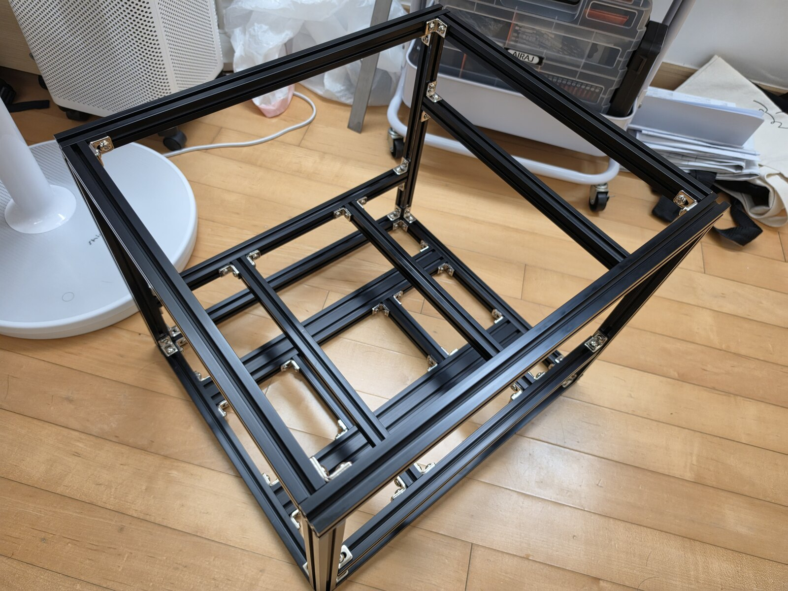
The full black 2020 frame
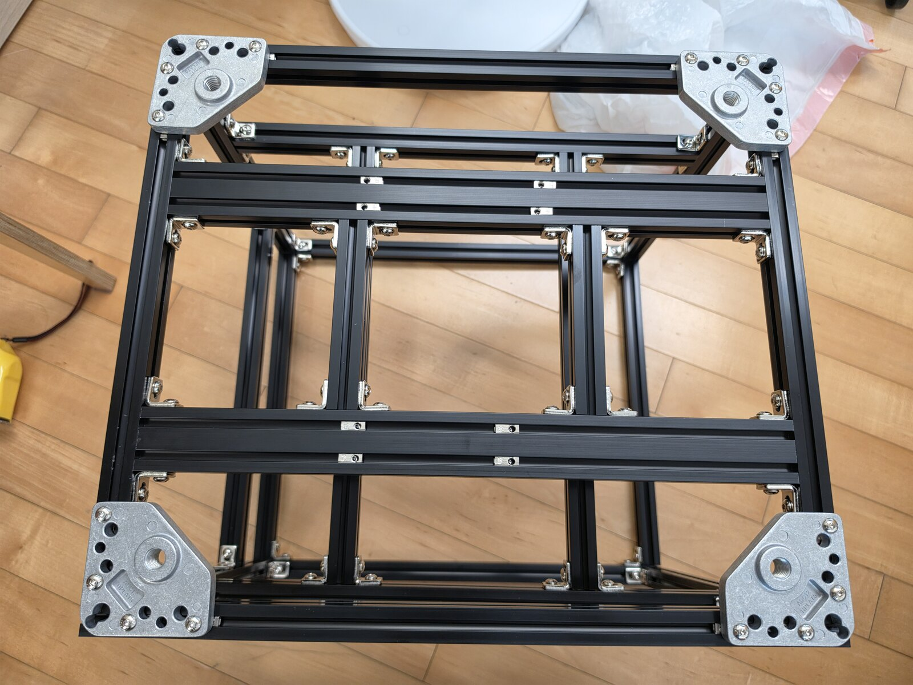
Three bays underneath and a caster plate at each corner
This was the fix for the wire mesh flexing. A 20-series hinge served as the pivot for each plywood swingarm. An M5 threaded rod guided a WM12-60 coil spring to press the drive wheel down. The springs take up the movement over bumps and dips, while the frame above stays level.
That gave me a 9.8 kg chassis resting on six points: four corner casters and two drive wheels in the middle. Those six points would come back to bite me.
Finite-element analysis showing how the spring takes the load over bumps and dips to maintain traction
Hinge, plywood swingarm, and WM12-60 spring assembly
The Hall encoder outputs were open-drain, so I needed pull-up and pull-down resistors to get a usable signal. I filled a mini breadboard with resistors, put STM32’s TIM2 and TIM3 in hardware encoder mode, and turned each wheel by hand exactly one revolution to count the ticks. It came to 2,475.5 ticks per revolution. After turning the wheels back, the left was off by zero ticks and the right by one.
That day I also ordered the ICM-42688-P IMU, a 5 V buck converter, fuses, and 60 m of wire.
Turning a wheel through one revolution using a pointer
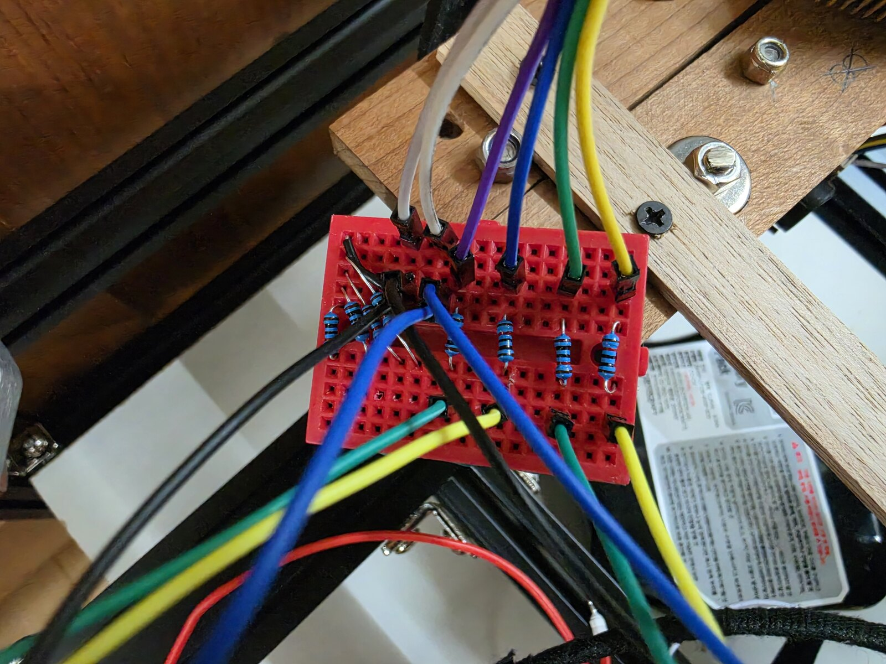
Pull-up and pull-down resistors on a mini breadboard
TIM2 and TIM3 hardware encoder and filter settings in STM32CubeMX
I started with the NUCLEO board on its own on August 18 and got 100 Hz PI + feedforward speed control running. By the 22nd, it was wired straight into the Raspberry Pi 5’s GPIO UART at 921,600 bps. There were no losses in 600 seconds of continuous transmission, and the round trip took 2.54 ms. I drove a triangle marked on the floor with tape to calibrate odometry. The effective wheel radius came out to 0.04979 m and the distance between wheels to 0.30912 m.
Temporary wiring for the NUCLEO, Raspberry Pi 5, and MDD3A
Calibrating odometry with a taped triangle on the floor
A depth camera would have run around $300. I used the C920 I already had and a marker printed on paper. Given the marker size, PnP can work out its 3D distance, bearing, and which way it’s facing. That was enough to follow a person and line the robot up square with a marker.
When several behaviors ask the wheels for speed at once, twist_mux sorts them by priority. Emergency stop comes first (255), then gamepad (100), alignment (60), Nav2 (55), and following (50).
The main chassis follows a paper marker
Automatically lining up square with the marker
Electronics & hardwareAccident · About $31 in replacements
I hit an overcurrent fault while following a marker on the real robot. The MDD3A motor driver burned out, and one motor and one encoder went with it. The encoder output was stuck at 0.4 V. I paid $30.78 to replace them, practically in tears. After that I added a 5 A fuse and an SR540 reverse-polarity diode, and gave the MCU its own power rail. That’s what finally got me to design a proper interface board.
Naver Pay + AliExpress (replacements after the fault)2026-08-30 ~ 09-01
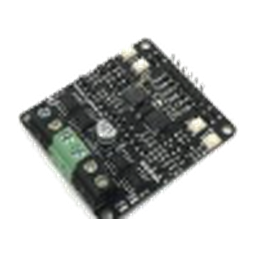
Cytron MDD3A (second purchase)Replaces the driver burned out by overcurrent$10.79
Two JGB37-520 Hall encoder motorsReplaced one motor and an encoder stuck at 0.4 V$19.99
Total$30.78
What I learned to add: 5 A fuse, SR540 reverse-polarity diode, and a separate MCU supply
→ Straight to designing a proper interface board
Checking the driver right after the fault
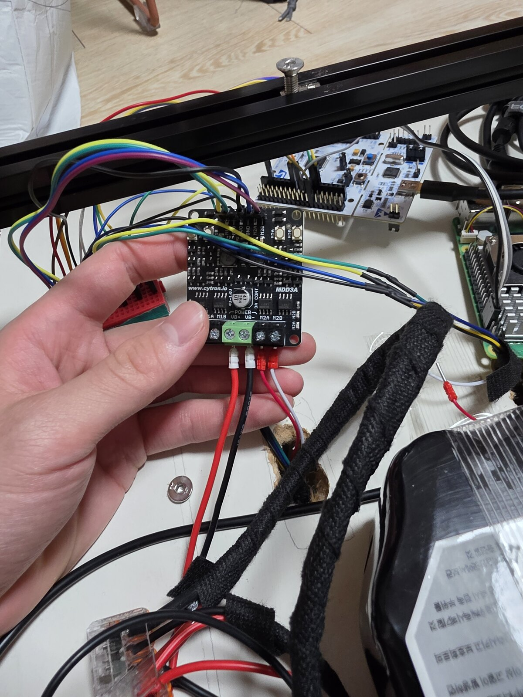
Rewiring the replacement driver and checking power-up
The breadboard lost contact just from vibration. I had to throw out the entire first round of PI tuning. So I drew a proper interface board in KiCad.
Star grounding keeps the high motor current apart from the ADC and encoder signals. A RECOM R-78E5.0 buck converter, 5 A glass fuse, and SR540 reverse-polarity diode protect the supply. I read battery voltage through a divider made with 1% resistors. The left and right encoder connectors have different pin counts, four and five, so I can’t plug them into the wrong sockets.
Rev B schematic: power protection, battery divider, encoder pull-ups, and SPI2 for the IMU
A hand drill couldn’t get me the precision I needed for the overhead camera mast and top plate. I drew a third-angle projection with 17 symmetric Ø5.5 mm holes in a 400 × 450 × 15 mm sheet of plywood, made the DXF and DWG files myself, and had a workshop I knew cut it on their CNC. I paid a Naver Smart Store seller $17.60 to tap and drill wrench-access holes in the 1,000 mm and 600 mm extrusions. I also bought a Logitech C270 for the overhead view ($20.04) and JST-XH harnesses ($18.89).
The 15 mm plywood top plate, CNC-cut at a workshop I knew
CNC top plate drawing (DXF, DWG, third-angle projection), 17 Ø5.5 mm holes, ±0.1 mm
Tapped and wrench-access hole drawing for the 2020 extrusion
Electronics & hardwareI’ll buy it next year · Factory-made PCBs
The schematic and layout were done. I decided I’d save about $11 and ended up soldering perfboard into the small hours. Five two-layer 90 × 70 mm boards from JLCPCB would have cost the same $11 or so, even with shipping to Korea.
Once I was done, I had exactly one thought: I should’ve just paid the $11.
1:21 a.m., soldering with KiCad open in front of me
Component side: RECOM buck converter, IMU, and JST connectors
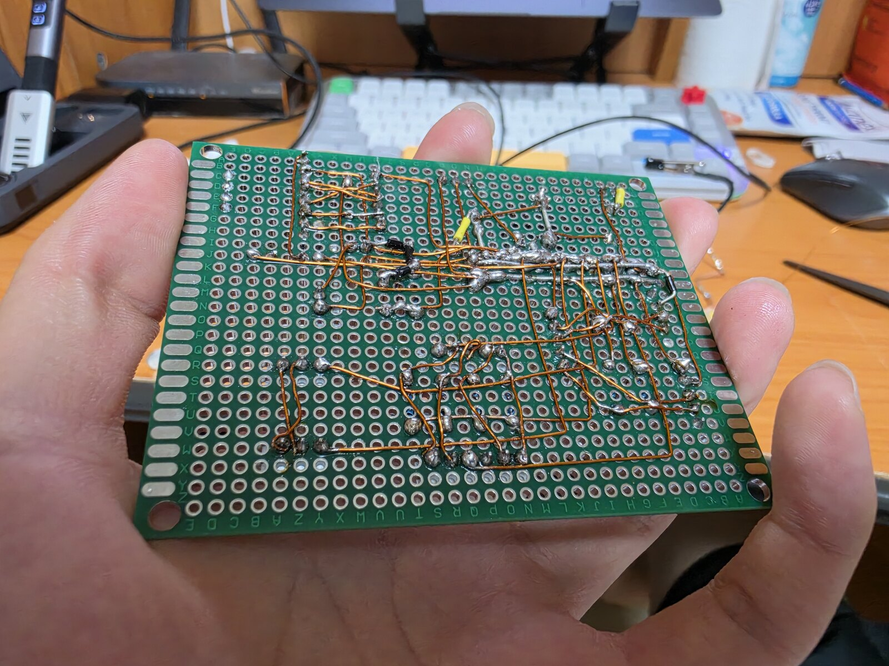
Enameled wire and star-ground wiring on the back
Care platformI’ll buy it next year · GPS/LTE module
Getting a location during an outing would mean buying GPS and LTE hardware and paying for a data plan. I decided to use the location from the phone the person already had.
I kept the app rules simple: body text at least 20 sp, key text at least 28 sp, tiles at least 140 dp, and no English on screen except SOS. I tucked the fiddly parts, like registering places and setting up the connection, into the caregiver settings. On a Galaxy S26 Ultra, I measured SOS acknowledgments at 8.3–16.5 ms and reads of the cached location at 10–19 ms.
I mounted the SO-101 arm, one-meter L-shaped mast, C270 overhead camera, and power bank on the CNC-cut plywood top plate. I calibrated the C270 with 26 checkerboard images and got a reprojection error of 0.11 px. The arm takes 20 V over USB-C PD from a 100 W UGREEN power bank and steps it down to 12 V at 5 A. I reinforced the mast and top-plate brackets with a second MISUMI order ($33.57).
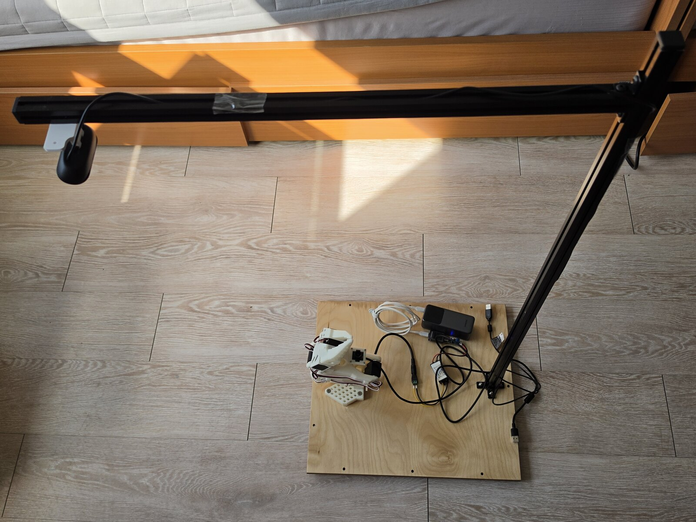
SO-101, 12 V power from USB-C PD, and the mast on the top plate
C270 overhead camera at the end of the one-meter L-shaped mast
It only booted with ST-LINK USB plugged in. On battery power alone the MCU hung. It turned out to be the clock. On a standalone start, the clock from ST-LINK (MCO) came up more than 100 ms later, past the timeout for the external clock (HSE). I changed the startup code to give HSE up to three seconds. While testing power-up, I also found three missing jumpers and an intermittent short between enameled wires.
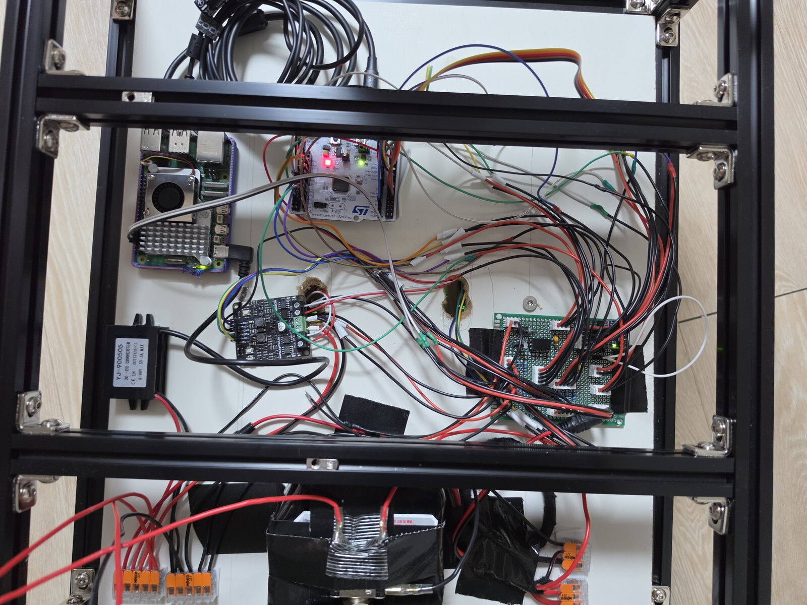
Lower electronics bay: Rev B board, NUCLEO, and Raspberry Pi 5
ACT fell apart when faced with something it hadn’t seen before. So I split the job in two. I left figuring out what an object was and where it was to the vision-language model. I left the precise calculations and safe motion to code. Here’s what happens when you say, “Bring me the pill case from the desk.”
Measure the work surface. The C270 overhead camera reads an 8 cm ArUco marker in seven frames and takes the median to estimate height and tilt.
Point out the object. Gemini 4 returns JSON with just the object’s image coordinates and height and whether a person’s hand overlaps it. The error is 1–2 px.
Calculate and grasp. GrabCut finds the object’s long axis so the gripper can line up. Six-axis inverse kinematics with 5–9 mm of sag compensation guides the grasp. If the gripper comes up empty, it goes 3 mm lower.
The state machine enforces the order. Whatever the model says, the gripper can’t open without “hand it to me.”
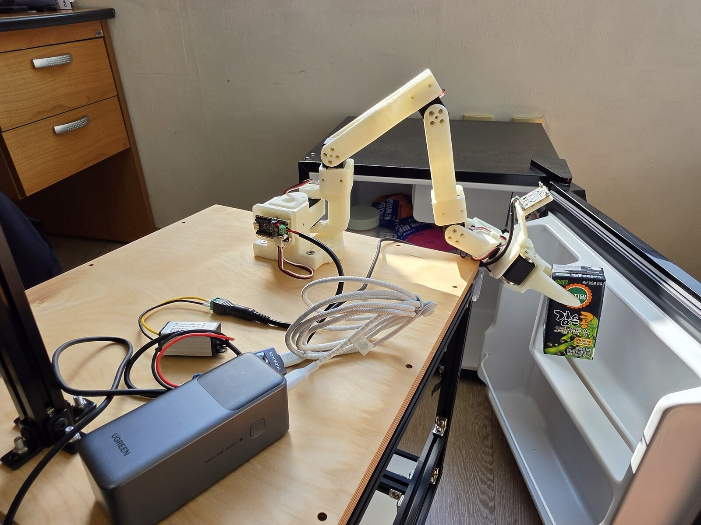
Maknae picks up an unfamiliar soy milk carton in front of the fridge
I paid at 11:39 p.m. One SLAMTEC RPLIDAR C1, $74.16. That opened up all-around obstacle stops and SLAM, which I’d hit a wall on with just the camera and odometry.
I mounted it dead center on the middle shelf, 250 mm off the ground. I lined up four posts that crossed the scan plane to calibrate its position (12 mm RMS) and heading (177.5° yaw). That was the last purchase. Balance: −$372.31.
Naver Pay · Official SLAMTEC store2026-11-06 23:39
Three points define a plane. Give a robot six points to stand on and it only takes a little unevenness for one to lift. That’s a problem when it’s a drive wheel. In a two-meter reverse test, a caster swung around and the robot slipped about 100 mm (+5.4%).
I removed one front caster and moved the other to the middle. That got me down to five points of contact. With the two spring-loaded drive wheels always pressing against the floor, the robot tracked straight and the odometry settled down.
Before: six points of contact with two front casters
After: five points of contact with one front caster moved to the center
I spun the robot around once on the same floor. The wheels said 315°. The gyro said 361°. With heading off by that much, the robot can go straight and still miss the spot it started from.
The raw gyro bias was +1.137°/s. Left sitting still, it would report 68° of rotation in a minute. I made it re-estimate the bias whenever the robot stood still for at least two seconds. In the 30 Hz EKF, I set the covariances to favor the wheels for forward speed and the gyro for rotation. Error over a 720° turn in place dropped from 90.3° to 3.7°. The real robot used the RPLIDAR C1 and slam_toolbox to build a map on a 5 cm grid. I verified Nav2 A* planning and RPP path following in Gazebo. Collision Monitor stops the robot if it detects an obstacle ahead.
“Maknae, can you bring me the clear tape?” Maknae found and picked up a transparent object it had never trained on, sitting on the uneven surface of a knee. When I said “hand it to me,” it put the tape in my hand. You can see that day’s clip under Demos on the real robot above.
Once I had it working, I realized an older adult was expected to look at a cart or talk into thin air. A Korean study found that older adults rated more humanlike faces higher for trust and likability.5 In a Georgia Tech study, around 60% of older adults chose a robot with a human face.6 So I gave Maknae a 3D avatar with facial expressions.
Say, “Maknae, show us your talent,” and the avatar dances while the arm moves to the beat alongside it.
“Maknae, show us your talent.” The avatar and SO-101 dance together.
A look inside
Maknae has five layers. Above the chassis and power supply sit STM32 wheel control, ROS 2 on a Raspberry Pi 5, the perception and arm that find and grasp things, and finally the app, dashboard, and avatar that older adults and their caregivers interact with.
LAYER 5 · UX
Older adults, caregivers, and avatar
Large-tile outing/SOS app, read-only caregiver PWA, and a 3D avatar with a voice and facial expressions
Rigid three-tier, 9.8 kg chassis, separate high-current and signal paths, and a self-contained arm supply
2020 extrusion (SolidWorks)Five-point spring suspensionKiCad Rev B (Star GND)LiFePO4 12.8V 9.9AhRECOM 5 V + PD 20-to-12 V buckRPLIDAR C1 · C920
SolidWorks chassis and KiCad interface board
I laid out two drive wheels and three casters on the 450 × 400 × 368 mm chassis. In SolidWorks I checked that the SO-101 arm, one-meter camera mast, and lidar on the middle shelf cleared each other. A 12.8 V LiFePO₄ battery runs the base. The arm has a separate supply: 20 V from a power bank, stepped down to 12 V.
The KiCad Rev B board separates motor power from sensor signals. I put a 5 A fuse and SR540 reverse-polarity protection at the input, pull-ups on the encoders, and pull-downs on PWM. The 90 × 70 mm perfboard has a star ground and 3.3 V bus. I used different connectors for the left and right encoders to make them harder to mix up.
Final SolidWorks assembly · Five-point suspension, lidar, SO-101, and L-shaped mast
KiCad Rev B schematic · Power protection, battery voltage sensing, and signal interfaces
KiCad perfboard layout · Connectors, ground, and 3.3 V wiring
STM32 firmware and CubeMX settings
I run statically allocated FreeRTOS on the STM32F446RE. The TIM6 interrupt wakes the control task every 10 ms, TIM1 outputs 18 kHz PWM, and TIM2 and TIM3 count the wheels’ quadrature encoder signals in hardware. A 921,600 bps UART link runs micro-ROS to exchange velocity commands and sensor readings with the Pi 5.
In CubeMX I used the PLL to take the 8 MHz HSE up to 84 MHz. The independent watchdog runs from a separate 32 kHz LSI. Even if the main clock or firmware stops, the watchdog restarts the MCU after about 300 ms.
Static FreeRTOS control architecture · From interrupts to tasks and motor output
Timer settings · Four TIM1 PWM channels, ARR 4,666Clock tree · 8 MHz HSE, 84 MHz system clock, and 32 kHz LSILQFP64 pinout · PWM, encoders, UART, IMU, and battery voltage input
Peripheral
Pins
Purpose
TIM1 CH1~4
PA8~PA11
18 kHz PWM (4,667 steps) and BDTR.MOE cutoff
TIM2 / TIM3
PA0·PA1 / PA6·PA7
Left and right ×4 quadrature encoders with digital filter IC1F=4
TIM6
Internal 100 Hz
Direct notification to ControlTask (P5), WCET 46.7 µs
USART1 / 2
PB6·PB7 / PA2·PA3
921,600 bps DMA for micro-ROS and 230,400 bps for debugging
SPI2 + EXTI0
PB12~15 / PB0
ICM-42688-P IMU at 100 Hz via DRDY, with DWT correction
ADC1 + IWDG
PA4 + internal VREFINT
Battery sensing with a 6.02:1 divider (+0.3%) and a 300.2 ms watchdog
ROS 2 navigation and four layers of stopping
A 30 Hz extended Kalman filter (EKF) combines the wheels and gyro to estimate pose. On the real robot I used the RPLIDAR C1 and slam_toolbox to build a map with a 5 cm grid. Nav2’s A* plans a path on the map and Regulated Pure Pursuit (RPP) issues the velocities to follow it. I verified route driving in Gazebo. The simulated sensors and wheels use the same ROS 2 topics, so I can reuse the higher-level navigation nodes.
Who can issue commands from the app, web, and voice interface into ROS 2, and where topics cross into real hardware or Gazebo
State machine. The app and voice tools can request starts, stops, and errands. The caregiver dashboard reads status. ROS 2 navigation nodes decide wheel speed.
Velocity arbitration. twist_mux applies priority in this order: emergency stop (255), manual gamepad (100), marker alignment (60), Nav2 (55), and following (50).
Sensor monitoring. Collision Monitor stops for an obstacle ahead. Losing the bag marker stops following. If it’s still missing ten seconds later, an SOS goes out with the phone’s GPS location.
On-board stop. The STM32 stops the motors after 200 ms without a fresh velocity command. If the controller itself stalls, the independent watchdog restarts the MCU.
How the app, caregiver dashboard, and robot talk
The Android app requests outings and SOS through phone-bridge. The caregiver dashboard shows the status and alerts posted by the robot, and displays the phone’s location when an SOS is active. The Pi 5 talks to the STM32 over serial. The laptop runs voice conversations, the avatar, VLM errands, and SO-101 control. The wheel-command timeout and watchdog run independently on the STM32.
From an overhead pixel to an arm coordinate
The C270 webcam reads an 8 cm ArUco marker in seven frames and uses the median to measure the work-surface height. The vision-language model marks the object in the image with a point and a box. The code extracts its contour with GrabCut and sends the arm to where the ray through that image point meets the work-surface plane. Inverse kinematics solves for the joint angles, with another 5–9 mm to compensate for sag under the arm’s own weight.
Arm target calculated from a point in the overhead image and the work-surface height
The errand state machine opens the gripper when it’s holding an object and gets a request to hand it over. After a safety stop, the outing state machine keeps the robot stopped even if the marker comes back into view.
Proof of concept, main robot, ACT, pick-and-place, app, dashboard, and booth
543
Photos and videos
June 3 to November 17, 2026
80
Records between midnight and 6 a.m.
Aug 13: 17 frame assembly photos · Oct 30: 15 from integrating the arm
1,121.43USD
Total on the receipts
About 150% of the $749.12 I started with
30.78USD
Repairs after the accident
One MDD3A and two JGB37-520 motors lost to overcurrent
I kept every receipt and went through 26 purchase screenshots and six MISUMI delivery notes covering 75 line items. The wire cart, ESP32, C920, and power bank were already at home, so they didn’t cost anything.
Date
Where
What I bought
USD
Jun 3
Home
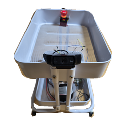
Two-tier wire cart, ESP32-S3 TFT, C920, and power bank
Already owned
Jun 4
AliExpress
Two encoder motors, 5 V buck converter, E-stop, and switch
$38.37
Jun 5
Devicemart
RPi 5 8 GB, LiFePO₄ battery, charger, and MDD3A
$365.14
Jun 20
AliExpress
SO-ARM101 Pro, PD trigger, and 12 V buck converter
$300.60
Jul 2
Naver
NUCLEO-F446RE
$29.67
Jul 31
Devicemart
Pololu wheels, hubs, hinges, and bolts
$58.34
Aug 3
MISUMI
First frame order: extrusion, 68 brackets, springs, and casters
$108.54
Aug 20
AliExpress
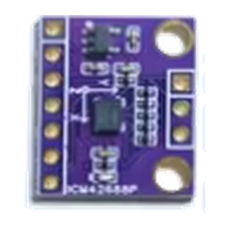
IMU, MCU buck converter, fuses, and wire
$25.72
Aug 30
Naver · AliExpress
Overcurrent repairs: MDD3A and two motors
$30.78
Sep 22
Naver
Extrusion machining, JST cables, and C270
$56.54
Oct 1
MISUMI
Second frame order: reinforcement bolts and brackets
$33.57
Nov 6
Naver
RPLIDAR C1
$74.16
Total spent on parts
$1,121.43
Balance from a starting budget of $749.12
−$372.31
USD estimates use the November 27, 2026 ECB reference rates, about 1,334.90 Korean won per US dollar. ECB rate data
The $1,121.43 I spent on parts is about one twenty-seventh of the $29,950 list price for Hello Robot’s Stretch 4 research mobile manipulator. Hello Robot pricing
I’ll buy it next year
Here’s what I used when the budget wouldn’t stretch. All three were roundabout ways of getting something working.
What I wanted to buy
What I used this time
Cost
Depth camera (RealSense or similar)
The C920 I already had, a paper ArUco marker, and PnP with the C270
$0 for the C920 (about $20 for the C270)
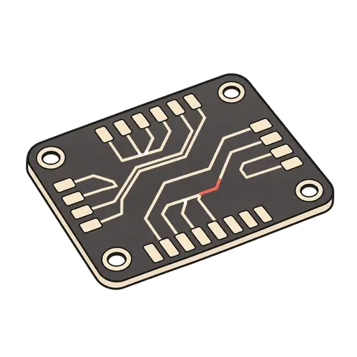
Factory-made PCBs (five from JLCPCB)
KiCad design, then hand-soldering perfboard in the early hours
Saved about $11 and stayed up all night
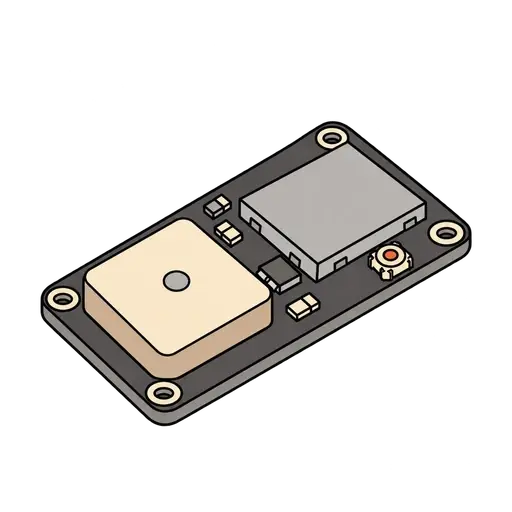
GPS/LTE module and data plan
Reused Fused Location on the older adult’s phone
$0.00
A demo in Gazebo
I typed a request for the remote on the desk. The same ROS 2 nodes as on the real robot drive there with Nav2, line up with the ArUco marker, find the remote with the overhead camera, pick it up, then return to where they started and hand it over.
Gazebo stands in for the house, sensors, wheels, and arm joints. Once the remote is between the gripper fingers, a simulated joint holds it there.
A recording from the remote-control request through driving, grasping, returning, and handing it over